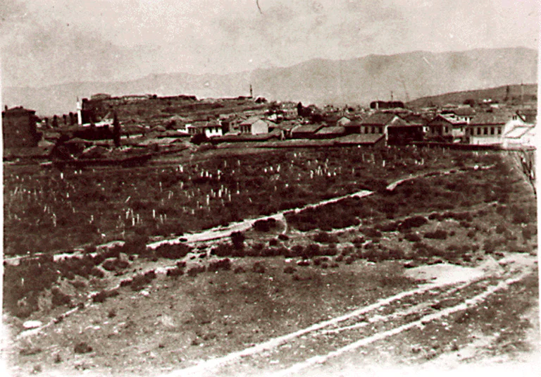
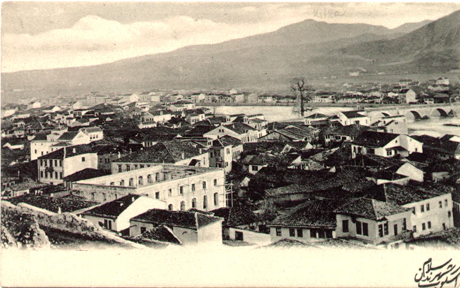
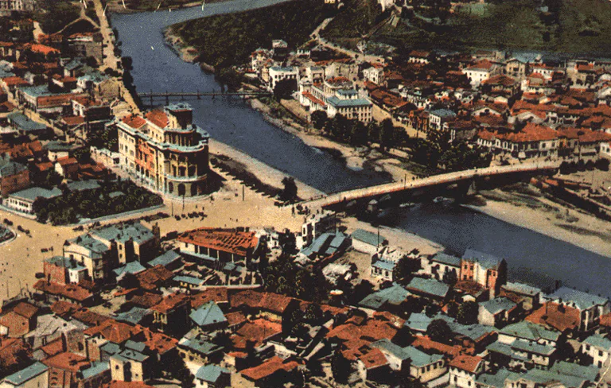
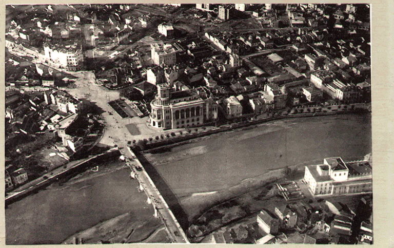
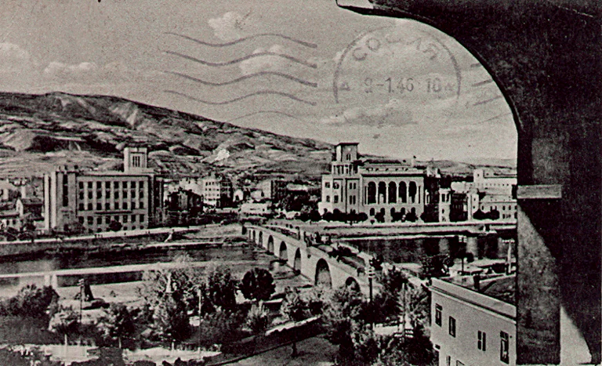
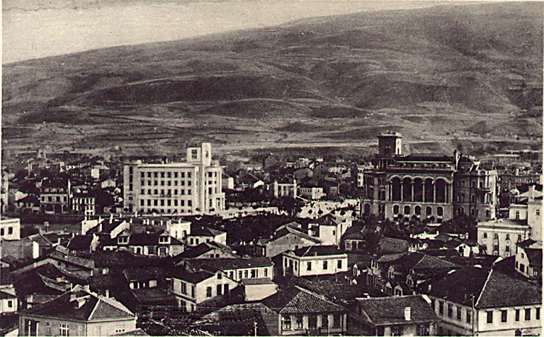

Üsküp 1916 - 1917 panorama 2
Balkan Savaşları'ndan belgeler
- Yıl
- 1916-1917
- Süre
- 00:12

19. yüzyılın sonlarına doğru Üsküp. Vardar'ın sağ kıyısındaki yeni mahallenin boş arazilerine bakış. Arka planda şehir kalesi - Kale. Sağda Gazi Baba tepesi.

19. yüzyılın sonu. Vardar'ın sağ kıyısındaki boş araziler; nehir boyunca yalnızca birkaç ev. Arka planda Üsküp Kalesi yükseliyor.

1888'de Üsküp, Gazi Baba tepesinden Üsküp Kalesi'ne doğru fotoğraflandı.

Saat Kulesi'nden Üsküp'ün kuzey kısmına, eski Türk ve Makedon mahallelerine bakış. Arka planda Gazi Baba tepesi. (19. yüzyılın sonu)

Üsküp - eski çarşıyla eski kısma bakış. Arka planda Mustafa Paşa Camii, sağında kışlalarıyla Üsküp Kalesi. Ön planda Gazi Baba mahallesindeki evler - 19. yüzyılın sonu.

Üsküp, 20. yüzyılın başı. Saat Kulesi'nden çarşıyla eski kamu, ticaret ve zanaat merkezine bakış. Eski kent dokusunda yeni mimari biçimler. Arka plana Mustafa Paşa Camii ve kışlalarıyla şehir kalesi hâkim. Altında Üsküp'ün en eski camisi Paşa Yiğit Bey Camii (bugün mevcut değil).

Üsküp Kalesi'nden Vodno dağına bakış. Kalenin hemen altında Yahudi mahallesi. Vardar ve Taş Köprü, hemen yanında Burmalı Camii görülüyor
- 20. yüzyılın başı.

Üsküp Kalesi'nden Vodno dağına bakış. Kalenin hemen altında Yahudi mahallesi. Vardar ve Taş Köprü, hemen yanında Burmalı Camii görülüyor
- 20. yüzyılın başı.

Üsküp Kalesi'nden Yahudi mahallesine ve şehre bakış. Ön planda sinagog (çatısız). Sağda Taş Köprü - 20. yüzyılın başı.

Üsküp Kalesi'nden Taş Köprü'ye ve Burmalı Camii'ne bakış. Bu fotoğraf, şehrin Vardar'ın sağ kıyısına ne kadar az yayıldığını gösteriyor. 19. yüzyılın sonlarına doğru çekildi. Çok uzakta arka planda bira fabrikası, o zamanki adıyla "Birarija". Ön planda Yahudi mahallesinin bir bölümü.

19. yüzyılın sonunda şehir merkezinin panoramik görünümü. Ortada Türk tiyatrosu. Vardar'ın sağ kıyısında, Taş Köprü'nün hemen yanında Burmalı Camii.

Fotoğraf Birinci Dünya Savaşı'ndan önce Üsküp Kalesi'nin surlarından çekildi. Eteğinde Yahudi mahallesinin evleri, okul ve sinagog. Solda Aziz Dimitri kilisesi.

20. yüzyılın başında Üsküp Kalesi'nden panoramik çekim. Önde kışladan birkaç asker. Eteğinde Yahudi ve Pajko mahallelerinin evleri, sonra Taş Köprü ve hemen yanında Burmalı Camii. Ötesinde Üsküp'ün yeni kısmı devam ediyor, uzakta bira fabrikası seçiliyor.

Üsküp Kalesi'nden Vodno ve Kitka dağlarına bakış. Fotoğrafın ortasında Taş Köprü, hemen yanında Burmalı Camii görülüyor.

Birinci Dünya Savaşı sırasında Üsküp. Fotoğrafta, çan kulesi arka planda görülen Aziz Kurtarıcı kilisesinin yakınında bir Sırp ordusu kampı görülüyor.

Üsküp panoraması - 1920'ler. Eteğinde okulu ve sinagoguyla Yahudi mahallesi var. Milli Tiyatro'nun inşası görülüyor.

Üsküp'ün panoramik resmi (1920 civarı). Vodno dağını burada görmek ilginç: bugün güzel ormanlarla kaplı olmasının aksine çıplak. İkinci Dünya Savaşı'ndan sonra örgütlü gençlik çalışma eylemleriyle ağaçlandırıldı. Ön planda sinagog ve Yahudi okuluyla Yahudi mahallesi.

Üsküp Kalesi'nden Üsküp şehrine bakış. Ön planda sinagog, okul ve Milli Tiyatro ile Yahudi mahallesi. Fotoğrafın solunda Taş Köprü ve inşa halindeki Subaylar Evi - 1920'ler.

Üsküp, 1920'ler. Üsküp Kalesi'nden Yahudi mahallesine bakış.

Gazi Baba'dan Üsküp Kalesi'ne doğru Üsküp'ün panoramik fotoğrafı. (20. yüzyılın başı)

Arka planda Mustafa Paşa Camii, altında kısmen Üsküp'ün en eski camisi olan Paşa Yiğit Bey Camii görülüyor. (bugün mevcut değil)

Gazi Baba'dan Üsküp'e bakış. Ön planda konut mahallelerinin sık dokusu. Arka planda Mustafa Paşa Camii ve şehir kalesi Kale'nin güney ve kuzey kısımlarındaki askeri kışlalar.

Vardar'ın sol kıyısında şehrin eski kısmına bakış. Ön planda özel evler. Ortada eski Üsküp çarşısının kompleksi. Arkada Mustafa Paşa Camii hâkim, arkasında şehir hapishanesi ve Kale'deki kışlalar. Mustafa Paşa Camii'nin altında Üsküp'ün en eski camisi Paşa Yiğit Bey Camii (bugün mevcut değil). (1920'ler)

Avrupalılaşma ve klasik, eklektik ve diğer üsluplardaki yeni yapılarla değişmiş eski kent dokusunun panoraması. Saat Kulesi'nden Mustafa Paşa Camii'ne doğru fotoğraflandı. Sağda kışlalarıyla Üsküp Kalesi - 1920'ler.

Çair - şehrin eski bir kısmı (bugünkü Çair belediyesi). Ön planda Gazi İsa Bey Camii, arka planda Yahya Paşa Camii. - 1920 civarı

Üsküp panoraması - Çair mahallesi ve Gazi Baba'nın bir bölümüyle sol kıyı. Ön planda Gazi İsa Bey Camii, arka planda Yahya Paşa Camii. (1920'ler)

Saat Kulesi - 1566-72'de inşa edildi. Arka planda Gazi İsa Bey Camii ve Yahya Paşa Camii - 1920'ler.

Şehrin eski kısmının Gazi Baba'ya doğru panoraması. Üsküp Kalesi'nden bakış. En sağda Sultan Murat Camii, solunda Saat Kulesi. Aynı hizada daha solda Gazi İsa Bey Camii - 1920'ler.

Şehrin merkez bölgesinin panoramik görünümü. - 1920'ler.

Şehir merkezinin kış manzarası. Ön planda, yerine sonradan Milli Banka yapılan düzensiz binalar. Binanın bir bölümündeki teras bir yazlık sinema: uçtaki iki direk perdeyi tutuyor, seyirciler için sandalyeler boş alana diziliyordu. Sol üstte Üsküp Kalesi. (1920'ler)

Şehrin merkez kısmının havadan çekimi (1928 civarı); Subaylar Evi, Taş Köprü, Milli Tiyatro ve Yahudi mahallesi hâkim. Vardar'da akıntıya karşı yukarıda Milli Tiyatro'ya giden ahşap köprü. Sağ üstte Kale'nin bir bölümü. Ön planda yeni mahallenin bir bölümü. Nehir çok alçak olduğundan yazın çekilmiş.

Şehrin merkez kısmının havadan çekimi (1928 civarı); Subaylar Evi, Taş Köprü, Milli Tiyatro ve Yahudi mahallesi hâkim. Vardar'da akıntıya karşı yukarıda Milli Tiyatro'ya giden ahşap köprü. Sağ üstte Kale'nin bir bölümü. Ön planda yeni mahallenin bir bölümü. Nehir çok alçak olduğundan yazın çekilmiş.

Çoğunlukla Vardar'ın sağ kıyısını gösteren, Subaylar Evi'nin hâkim olduğu panoramik havadan Üsküp fotoğrafı. Sağda Ristić Sarayı. Önünde ortası yeşillikle düzenlenmiş meydan. Faytonlar da görülüyor; meydan onların ana durağıydı. Taş Köprü iki kıyıyı birleştiriyor. Sağ altta, birçok eski Üsküplünün hâlâ özlemle andığı güzel bir bina olan Milli Tiyatro.

Taş Köprü ve mahallelerle şehrin sol kısmının panoramik çekimi: solda Yahudi mahallesi, sağda Pajko mahallesi. Köprünün sağında, Osmanlı Bankası'nın önünde duran Balkan Savaşları'nda düşenlerin anıtı. Arka planda camilerin bölümleri, Saat Kulesi ve Çair ile Gazi Baba mahalleleri. (1920'ler)

Üsküp'ün panoramik görünümü: Yahudi mahallesinin bir bölümü, Pajko mahallesi ve Taş Köprü ile Vardar'ın sol rıhtımı. (1920'ler)

Subaylar Evi'nin kulesinden Taş Köprü'ye bakış. Köprünün hemen yanında, sağda diş hekimi Dr. Ruben'in muayenehanesi, biraz daha sağda Osmanlı Bankası vardı. Aralarında fayton duraklı küçük bir meydan, meydanın ortasında da düşen savaşçılar anıtı vardı - 1927 civarı.

Subaylar Evi'nin kulesinden Taş Köprü'ye bakış. Köprünün hemen yanında, sağda diş hekimi Dr. Ruben'in muayenehanesi ve ziraat bankası vardı. Sağda Osmanlı Bankası. Aralarında fayton duraklı küçük bir meydan, meydanın ortasında da Balkan Savaşları'nda düşenlerin anıtı vardı - 1927 civarı.

Subaylar Evi'nin kulesinden Taş Köprü'ye bakış. Köprünün hemen yanında, sağda diş hekimi Dr. Ruben'in muayenehanesi, biraz daha sağda Osmanlı Bankası vardı. Aralarında fayton duraklı küçük bir meydan, meydanın ortasında da düşen savaşçılar anıtı vardı - 1927 civarı.

Subaylar Evi'nin kulesinden fotoğraflanan, Vardar üzerindeki Taş Köprü'ye ve sol kıyının bir bölümüne, Pajko mahallesine bakış. Köprünün hemen yanında, sağda diş hekimi Dr. Ruben'in muayenehanesi vardı. Sağda Osmanlı Bankası. Aralarında fayton duraklı küçük bir meydan, meydanın ortasında da Balkan Savaşları'nda düşenlerin anıtı vardı - 1927 civarı.

Panoramik çekim - arka planda Üsküp Kalesi ve Yahudi mahallesiyle Taş Köprü'nün görünümü - 1920'ler.
.

1930'dan sonra Üsküp. Solda Milli Banka, sağda Subaylar Evi. Ön planda İbni Pajko Camii'nin minaresinin bir bölümü ve diş hekimi Dr. Ruben'in binası. Küçük meydanda Üsküp'ün en lezzetli simitlerini yapan bir fırın ve fayton durağı vardı.

Üsküp Kalesi ile Vardar, sağda şehir seçiliyor. Subaylar Evi ve Milli Banka görülüyor. - 1930'lar

Şehrin ve Vardar'ın akışının güzel bir fotoğrafı. Solda Üsküp Kalesi. Ortada Subaylar Evi ve Milli Banka. Sağda Vodno dağı, uzakta Kitka dağının silueti. - 1930'lar

Vodno dağı ve Bunjakovec mahallesiyle Vardar'ın akışının harika görünümü. Subaylar Evi ve Milli Banka görülüyor. (1930'lar)

Bunjakovec mahallesinin görünümü - 1930'lar, fotoğrafın sağında şehir parkının bir bölümüyle.

1920'lerde yeni kurulan Bunjakovec mahallesinin bir bölümü. Mütevazı mimariye sahip iki katlı binalar görülüyor.

Bunjakovec mahallesinin görünümü, 1930'lar.

Bugün şehir merkezinin bir parçası olan Bunjakovec mahallesi. Bunjakovec mahallesinin imar planına göre yapılmış planlı konut binası dizileri görülüyor.

Üsküp Kalesi'nden Vodno dağına doğru fotoğraflanmış güzel bir panoramik kış manzarası. Ortada sağda Subaylar Evi ve Ticaret Odası.

Vardar üzerindeki Taş Köprü'nün görünümü. Nehrin karşı tarafında: solda Milli Banka, sağda Subaylar Evi.

Üsküp panoraması - Üsküp Kalesi'nden fotoğraflandı. İki bina hâkim: sağda Subaylar Evi, solda Milli Banka. Ön planda Yahudi mahallesi. (1930'lar)

Şehrin merkez kısmının havadan fotoğrafı: meydan, Subaylar Evi ve Milli Banka. Daha yukarıda Milli Tiyatro ve küçük ahşap köprü görülüyor.

Şehrin havadan çekimi; Subaylar Evi, Milli Banka, Ticaret Odası, Yahudi ve Pajko mahalleleri ve Taş Köprü ile meydan görülüyor. Sol üstte kışlalarıyla şehir kalesi Kale'nin tamamı. Yanında Mustafa Paşa Camii, arka planda Yahya Paşa Camii seçiliyor.

Üsküp'te 1835'te yapılan Meryem Ana katedral kilisesinin (ortada, yüksek çan kulesiyle) ve 1902 tarihli Aziz Mina kilisesinin (solda, iki çan kulesiyle) havadan fotoğrafı. Çevresi Pajko mahallesi.

Üsküp, 1930'lar. Şehrin eski kısmı. Eski bir Türk yapısının demir parmaklıklı penceresinden bakış.

Şehir panoraması. En solda Sultan Murat Camii, sağında Saat Kulesi. En sağda Gazi İsa Bey Camii. Uzakta Milli Banka ve Subaylar Evi, arkalarında Vodno dağı yükseliyor. (1930'lar)

Şehir panoraması. Arka planda Sultan Murat Camii, sağında Saat Kulesi. En sağda Gazi İsa Bey Camii. Uzakta Milli Banka ve Subaylar Evi. (1930'lar)

Şehrin havadan çekimi. Altta Taş Köprü ve Subaylar Evi. Daha yukarıda Milli Tiyatro'ya ve Yahudi mahallesine giden küçük ahşap köprü. Üstte kışlalarıyla Üsküp Kalesi. 26 Haziran 1933'te saat 10'da çekildi.

Bugünkü Üsküp Şehir Müzesi'nin önündeki boş, yapılaşmamış arazi. Solda meydana giden ana caddedeki "Bristol" ve "Srpski Kralj" otelleri. Aynı caddede, fotoğrafın ortasında Kranga Sarayı. (1930'lar)

Meydanın havadan çekimi. Ön planda arkadan Milli Banka, sağında Ticaret Odası. Milli Banka'nın karşısında Subaylar Evi. Sağda Vardar ve Taş Köprü'nün bir bölümü. Akıntıya karşı yukarıda, fotoğrafın sağ üst köşesinde de görülen Milli Tiyatro'ya giden ahşap köprü.

Balkan Savaşları'ndan belgeler
 Su kemeri4 kartpostal
Su kemeri4 kartpostal Kale30 kartpostal
Kale30 kartpostal Köprüler60 kartpostal
Köprüler60 kartpostal Rıhtım58 kartpostal
Rıhtım58 kartpostal Meydan46 kartpostal
Meydan46 kartpostal Binalar66 kartpostal
Binalar66 kartpostal Hristiyan kiliseleri19 kartpostal
Hristiyan kiliseleri19 kartpostal İslami yapılar33 kartpostal
İslami yapılar33 kartpostal Subaylar Evi29 kartpostal
Subaylar Evi29 kartpostal Tiyatro28 kartpostal
Tiyatro28 kartpostal Tren garı13 kartpostal
Tren garı13 kartpostal Okullar36 kartpostal
Okullar36 kartpostal Parklar12 kartpostal
Parklar12 kartpostal Pazarlar18 kartpostal
Pazarlar18 kartpostal Sokaklar38 kartpostal
Sokaklar38 kartpostal Panorama I60 kartpostal
Panorama I60 kartpostal Panorama II30 kartpostal
Panorama II30 kartpostal Kolajlar55 kartpostal
Kolajlar55 kartpostal Seller9 kartpostal
Seller9 kartpostal Deprem27 kartpostal
Deprem27 kartpostal Üsküp 200026 kartpostal
Üsküp 200026 kartpostal